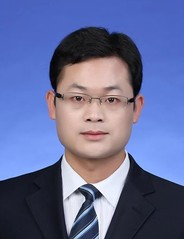

|  |
Guiyuan Jiang 姜桂圆 associate professor | Master's supervisor | Mount Taishan Scholar Young Expert |
He is an associate professor of the School of Computer Science of Ocean University of China. He was introduced by Nanyang University of Technology in Singapore in 2022 and was selected into the national overseas talent introduction plan, young experts of Mount Taishan Scholars in Shandong Province, overseas excellent young people in Shandong Province, "Young Talent Project" of Ocean University of China and other youth talent projects. Obtained a doctoral degree from the School of Computer Science and Technology (Intelligence Department) at Tianjin University, and later joined the School of Computer Science at Nanyang Technological University (NTU) in Singapore as a postdoctoral/research fellow, following T Professor Srikanthan (former Dean of NTU School of Computer Science and Head of Network Security Research Center) and S- K. Professor Lam is engaged in research in areas such as transportation big data processing, secure and reliable embedded system design, and software security. During this period, I participated as a major participant in major national projects such as TUM CREATE (Phase II) by the National Natural Science Foundation of Singapore. At present, we mainly engage in research on big data processing and applications for intelligence and marine science, software code vulnerability detection and risk assessment, artificial intelligence security, and optimization algorithm design. I have published over 70 papers in renowned international journals and conferences such as IEEE TC, IEEE TPDS, IEEE-ACM TNET, IEEE TITS, IEEE TVLSI, IEEE TCAD, IEEE TIFS, IJCAI, SDM, DATE, etc. Among them, I have published over 30 SCI papers and about 40 papers in CCF A/B journals/conferences. Hosted the National Natural Science Foundation of China's general projects, three national/provincial youth talent projects, and the China Ocean University Youth Talent Project Initiation Fund. Participated in regional international scientific and technological cooperation projects as project/unit leaders, as well as the China Ocean University Innovation Cross Team Cultivation Program and other projects. Enrollment Information: We welcome students who are interested in artificial intelligence, data mining, open-source software vulnerability detection, artificial intelligence security, algorithm design, and have perseverance to join our team. We maintain close cooperative relationships with multiple high-level research teams both domestically and internationally, and select outstanding graduate students to visit and study at Nanyang Technological University in Singapore every year (usually six months or one year).
Reviewer for a number of Journals and Conferences, including IEEE Journals: TC, TPDS, ToN, TVLSI, TIE, TCAD, TMM, TCOMM, JSAC, TITS, TVT, TGRS; Elsevier Journals: INS, CN, AUTCON, FGCS, TCS, PARCO, JPDC, TRP-C, TRP-D, TRP-E；Springer Journals: TJSC, JCST, etc; PDCAT, GLSVLSI, PAAP, etc